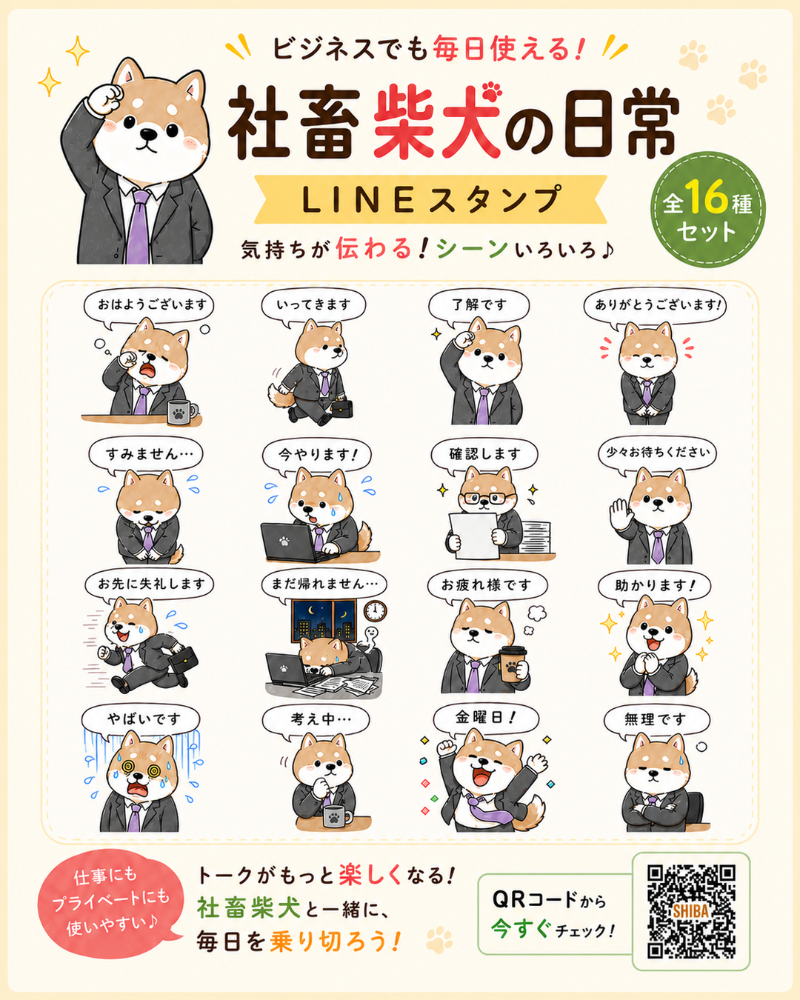
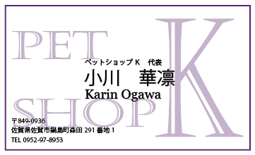
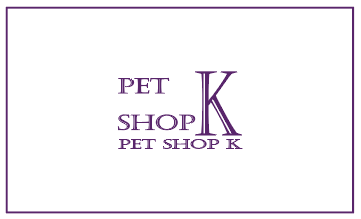
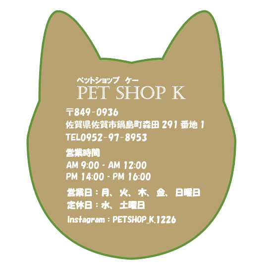
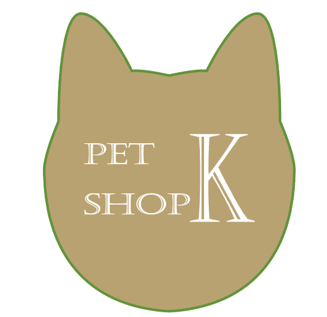
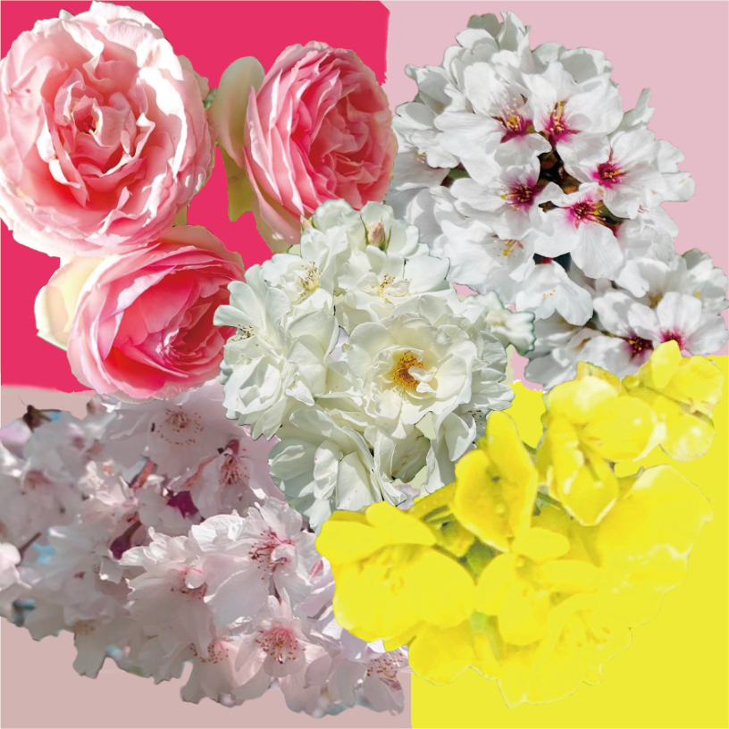
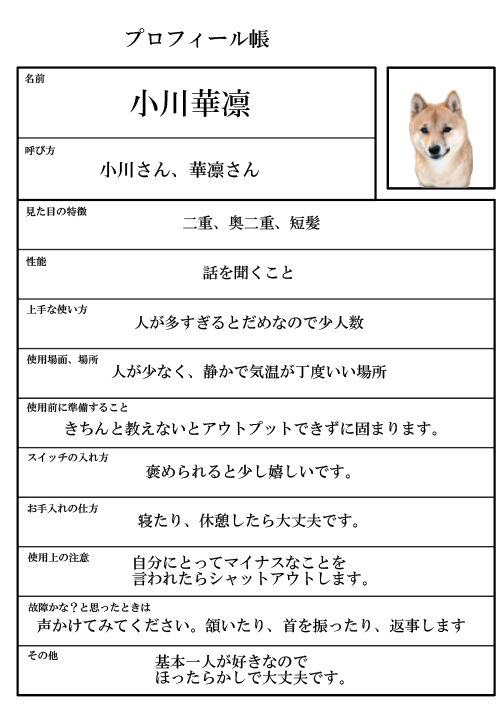
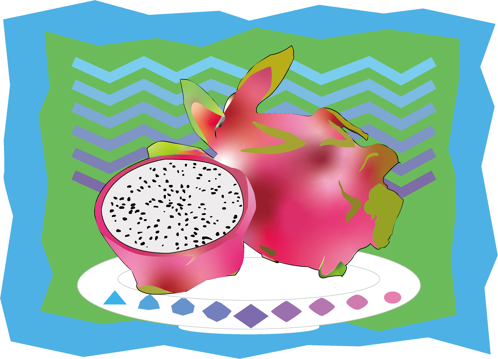

情報デザイン学科 ポートフォリオ
小川 華凛
本名：小川 華凛（おがわ かりん） / ニックネーム：カリゴン
趣味：旧車イベントに行くこと
授業で制作したグラフィック、Web、UIデザインの作品をまとめています。
和風の落ち着いた雰囲気が好きです。
About
自己紹介
情報デザインを学びながら、見る人に伝わりやすいレイアウトや配色を研究しています。
和風の模様や余白の使い方が好きで、やわらかく親しみやすい表現を目指しています。
使用経験のあるツール
Illustrator / Photoshop / ChatGPT / Codex / VS Code
Works
作品一覧
授業で制作した作品を掲載しています。
-

社畜柴犬の日常
柴犬をモチーフに、ビジネスシーンでも使いやすいLINEスタンプを制作しました。表情やしぐさで気持ちが伝わるように意識しました。
-


名刺デザイン
架空のペットショップを想定し、名刺デザインを制作しました。ロゴや文字の配置を工夫し、お店の雰囲気が伝わるように仕上げました。
-


ショップカード
犬型の形を活かしたショップカードを制作しました。住所や営業時間などの情報が見やすく伝わるように、文字の配置と余白を意識しました。
-

花のコラージュ
花の写真を組み合わせ、色合いや配置のバランスを意識して制作しました。
-

自分の取扱説明書
自分の性格や接し方を、取扱説明書のような形式でまとめた作品です。情報が見やすく伝わるように、表組みや余白を意識して制作しました。
-

ドラゴンフルーツ
好きなフルーツであるドラゴンフルーツを題材に、Illustratorで制作しました。色の重なりや形のバランスを意識して、明るい印象に仕上げました。